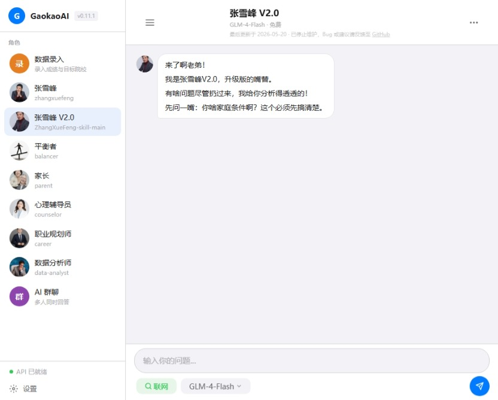

基于 AI 大语言模型的多角色对话工具，专注高考志愿填报辅助。支持单聊和群聊模式，可同时召唤多个 AI 角色围绕同一话题展开讨论。
GaokaoHelper 是一款基于 AI 大语言模型的多角色对话工具，专注高考志愿填报辅助。内置多个 AI 角色，支持单聊和群聊模式，可同时召唤多个 AI 角色围绕同一话题展开多轮讨论，从不同角度为用户提供志愿填报建议。
| 角色 | 定位 |
|---|---|
| 张雪峰 | 实用主义、就业导向，帮普通家庭看清现实 |
| 张雪峰 V2.0 | 同款升级版 |
| 平衡者 | 提供与张雪峰互补的另一面视角 |
| 家长 | 普通父母的声音，关心稳定、学费和距离 |
| 心理辅导员 | 缓解焦虑，处理"怕选错"的心理 |
| 职业规划师 | 长远发展视角，关注 10 年后的职业路径 |
| 数据分析师 | 指导用户去哪找数据、帮用户解读数据 |
注：角色 SKILL 定义文件引用了开源社区规范，其中张雪峰角色基于社区开源项目
点击图片可放大查看
这个项目最开始是因为张雪峰老师逝世后，有人做了一个张雪峰 SKILL，我试着接入到 Claude Code 里试了试，发现效果还不错。回想起来，每次高考我都会做点相关的东西去 B 站赚流量——大一写了个高考报考志愿伪代码，大二用 Python 写了个高考志愿滑档退档模拟系统。这次这个张雪峰 SKILL 驱动的高考志愿咨询系统，我觉得肯定有潜力，所以就开干了。
最大的困难就是 AI 幻觉问题——AI 老乱说话，高考报名数据乱给。为了解决这个问题，我各种找方案，最终找到了 GLM-4-Flash，它可以联网（其实最主要的是免费，哈哈）。我的做法是：把 GLM 作为一个联网小助手，它的顺序级别和用户一样，每次用户输入什么，联网小助手就会先读取，然后由于 GLM 联网小助手和用户标签相同，下面的主 AI 也会读到联网小助手的回答，这样就避免了 AI 乱回答数据的问题。但新的问题又来了——GLM 查不到的东西，它依旧乱说。后面用提示词工程狠狠惩罚限制它，查不到不知道的东西不许乱说。
这里面的流程是：联网用的是 GLM，回答的 AI 可以是别的模型。本来只接入了 DeepSeek，但要钱，不方便我测试。我还是喜欢免费的，结果还真让我找到了 GLM 有不少免费模型，虽然差了点吧，但你就说能不能用吧。借此我还一起接入了 Kimi、MiniMax，方便用户自己去选。然后我又担心用户不会接入 API——API 要钱啊，哪怕是免费的也有并发限制，我肯定不会给他们提供我的 API，本来就开源了，我可不能倒贴钱。但怕他们不会用怎么办？我给每个 AI 都写了接入教程，很傻瓜的那种，不知道他们学不学得会，反正我尽力了。
后面我还加入了 AI 群聊。一开始只有张雪峰一个人的 SKILL，但那天晚上看了好多人在骂张雪峰，我就意识到其实张雪峰也不完全对。所以故意写了好几个 AI 角色专门反驳张雪峰的观点，集思广益嘛，毕竟我也是真的希望这个网站能帮到某些人。AI 群聊里一群 AI 可以在里面自己吵架，这样能让学生更好地判断。里面有家长角色、反对张雪峰角色，各种七七八八的。
这个项目是我维护时间最长的，每隔一段时间就会去加功能。最后一次加功能，是加入了用户自己录入高考数据以及目标院校录取分数的地方。因为就算 GLM 可以联网，它也查不到高考高校的具体数据（我后面听说是要花钱找学校买），所以只能让用户自己去填真实数据，然后这个数据会同步给所有 AI 角色。不过你乱写的话，是有 AI 检测机制的——太离谱的数据 AI 会用自己的知识库反问你是不是乱写，哈哈，有意思吧。
最重要的就是免责声明了。我反复写了好多地方——内容 AI 生成，用户自行甄别。我是真怕有人用我这个报考志愿然后滑档了，发疯找我麻烦。就算你把张雪峰复活去指导你，都有可能滑档，我这个 AI 哪里敢保证。而且我又不去审核，所以我写了好多免责声明，开屏使用就硬控 10 秒必须看免责声明。我还是很聪明的，哈哈。